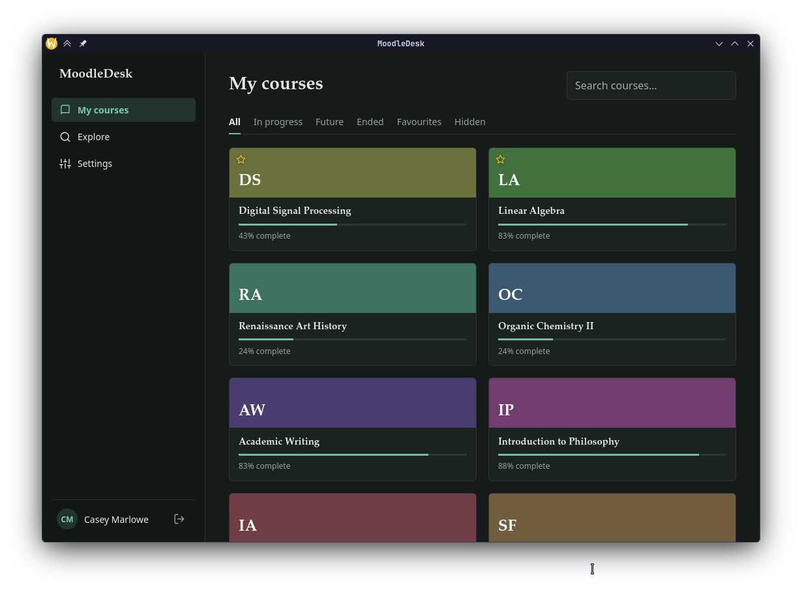

Your Moodle courses, on your desktop.
MoodleDesk is a free desktop app for Moodle. Open your courses, read assignments and save course files without loading the website each time.
Download from GitHub
What you can do
- Sign in
- Enter your university's Moodle address. Single sign-on opens your institution's own login page in your browser, and you come straight back to the app. Plain username and password sites work too.
- Browse courses
- Filter by in progress, future, ended or favourites, search by name, and hide the courses you no longer need.
- Read assignments
- See due dates, descriptions, attachments, your submission status and grade. Locked assignments show when they open. To hand something in, the app opens the page in your browser, already logged in.
- Keep your files
- Files are saved in a folder per course and open in your usual PDF viewer or office app. By default a file is downloaded again only when your teacher has updated it.
- Find more courses
- Search the whole site by course, department or teacher and enrol yourself in courses that allow it.
- Stay private
- Your login is stored in the system keychain. MoodleDesk talks only to your Moodle site and to GitHub, to check for new versions.
Downloads
Loading the latest version…
First launch
- Windows
- The installer is not code-signed yet, so SmartScreen may warn you. Choose More info, then Run anyway.
- macOS
- The app is not notarized yet. If macOS refuses to open it, right-click the app and choose Open, or allow it under System Settings, Privacy & Security.
- Linux
- For the AppImage, make it executable first:
chmod +x MoodleDesk*.AppImage. The .deb and .rpm packages install with your package manager.